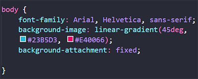
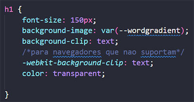
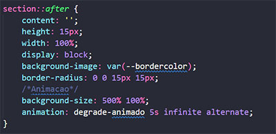

Gradiente
É a área onde duas ou mais cores são sobrepostas. O gradiente pode ser aplicado no background, na borda ou no texto;
Aplicação no background
Para aplicar gradiente no background usa-se a tag background-image:linear-gradient(direcção, cores, área(percentagem))
fig.1: Código de gradiente para background;
Exemplo
Aplicação no texto e na borda
Para usar o gradiente apenas no texto usa-se o comando background-clip:text, mas tem alguns navegadores que podem não suportar o comando, para evitar isso usa-se o -webkit-background-clip:text.

fig.2: código de gradiente para texto.

fig.3: código de gradiente para borda.
Exemplo